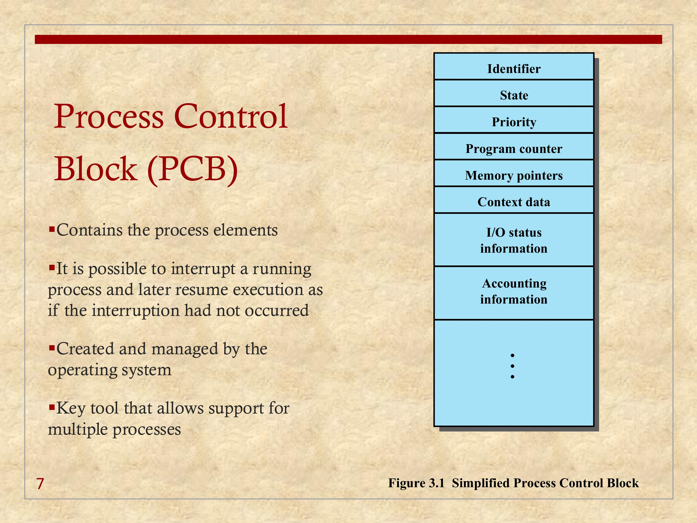

Chapter 3: Process Description and Control· Slide 7 of 58
Ch03v2a.pdf
Slide 7 / 58
Process Control Block (PCB)
进程控制块（PCB）
Excerpted from “Ch03v2a.pdf” — Page 7

Original Content (verbatim)
Contains the process elements包含进程的各个要素
It is possible to interrupt a running process and later resume execution as if the interruption had not occurred可以中断一个正在运行的进程，之后再恢复执行，就好像中断从未发生过一样
Created and managed by the operating system由操作系统创建并管理
Key tool that allows support for multiple processes是支持多进程的关键工具
Figure 3.1 Simplified Process Control Block: identifier, state, priority, program counter, memory pointers, context data, I/O status information, accounting information图 3.1 简化的进程控制块：标识符、状态、优先级、程序计数器、存储器指针、上下文数据、I/O 状态信息、记账信息
?Possible Exam Questions(2 questions · click to reveal)
The data structure that contains the process elements; it is created and managed by the operating system.
包含进程各个要素的数据结构，由操作系统创建并管理。
Source: “Ch03v2a.pdf” — Page 7
It is the key tool that allows support for multiple processes and lets a process be interrupted and later resumed as if the interruption had not occurred.